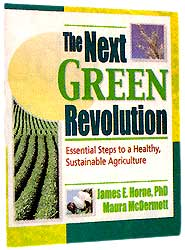

"What kind of agriculture do we need, and how can farmers provide it?"These are the two questions addressed in The Next Green Revolution by James E Horne and Mauna McDermott. The book begins with an indictment of our current industrial agriculture for failing to fulfill its fundamental responsibilities to the farmers who use it, to the natural environment that supports it and to the society that depends upon it. While their case against industrial agriculture is convincing, this book is really about the remedy, a treatment that can cure the ills of industrialization - a sustainable agriculture.
The authors refer to sustainable agriculture as revolutionary thinking, which it truly is. They suggest that we can and must find ways to meet our needs while leaving equal or better opportunities for others of this generation and for future generations. Pursuit of individual, short-run self-interests will not protect the natural environment nor ensure societal well-being in the long run. We must make conscious, purposeful decisions to take care of other people, the natural environment and ourselves as well.
The bulk of the book is devoted to eight practical steps farmers can take to ensure a healthy, enduring agriculture: creating and conserving healthy soil, conserving water and protecting its quality, managing organic wastes,. selecting plants and animals adapted to the environment, encouraging biodiversity, managing pests with minimal environmental impact, conserving nonrenewable energy resources. and increasing profitability and reducing risk. Perhaps the greatest contribution of this book is its down-to-earth, step-by-step approach to developing more sustainable farning systems. It gives farmers practical suggestions for increasing profits and reducing risks while regenerating the soil, protecting the environment and being good neighbors. Horne and McDermott show us that sustainable farning is not only possible, it is also very practical.
- John E. Ikerd, Ph..D.
Professor Emeritus, University of Missouri
|
 |
|
|